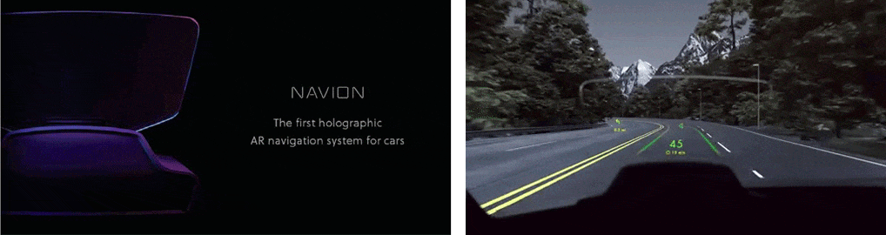
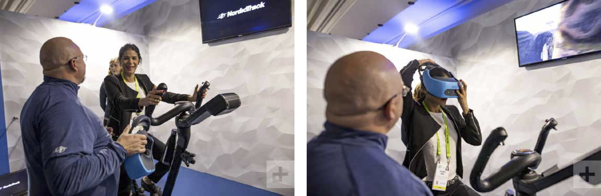
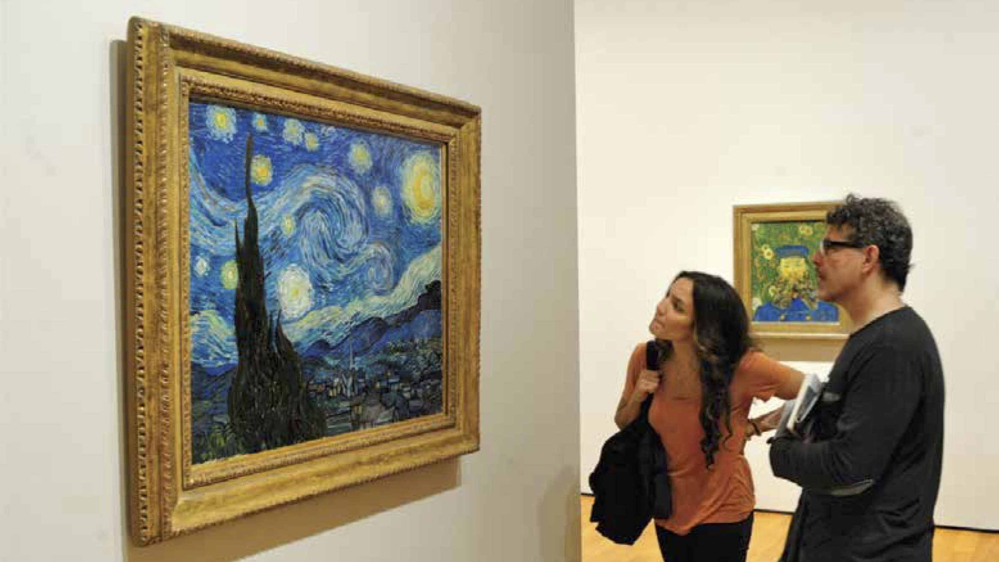

Virtual Reality (VR) is an imaginary world, a computer simulation. Through a system, the brain is fed with 'virtual sensory data'. Sensory data can include seeing, hearing, smelling, tasting and feeling which can alter the perception of the user. Subsequently, immersion into Augmented Reality (AR) can be seen as a digital layer on top of the real world, which can not be seen with the naked eye, but by means of devices like a camera from the smartphone, tablet or computer. Mixed reality (MR) is a combination of aspects from both the physical and virtual worlds. It is a hybrid environment where virtual objects can be mapped to the physical environment.
The most prominent of its latest developments are the Oculus Rift (VR) and the Microsoft HoloLens (AR).
If this interests you, take a look at examples I found in my research, a mini conceptual assignment and my views on the topic.
With Augmented Reality (AR) and Virtual Reality (VR), there are accompanying concepts of immersion, presence and enhancement which I will be considering whilst looking into such technology. Also, I would like to investigate how we can use AR and/or VR and in what ways can it possibly improve users' way of life as well as add value to its field.
AUGMENTED REALITY (AR):
WAYRAY NAVION AND TRUE AR SDK

Navion’s True AR is essentially a virtual world around the car that moves and continuously changes in sync with the route. The information displayed in True AR is seamlessly integrated into the real world, allowing the driver to focus on the road and making driving safer. It creates a real AR experience without special eyewear or headgear. Navion has a built-in Full HD camera for continuously mapping the environment while simultaneously keeping track of the car’s location within it. This process is called SLAM, simultaneous localization and mapping.
WayRay's demo holographic AR windshield was recently presented at the
Consumer Electronics Show (CES) in Las Vegas on January 2019.
— ★ —
With this being said, I feel that it eventually boils down to how much information they end up including into its holographic projection as its presence might be too overpowering and end up being distracting instead of providing safety. Nevertheless, I found WayRay's concept fascinating specifically with respect to two aspects: collision warning and blind spot detection as shown below.
While there is mention of including landmarks, parking costs, weather and so on, I find that having collision warning and blind spot detection are aspects that would add the most value. These could potentially increase car safety and possibly reduce car accidents. All in all, it heightens the users' awareness of each situation and that sounds promising to me.
— ★ —
While Hydraulic VR rides might enhance the immersive experience in theme parks or county fairs, I was wondering if VR can be applied in a more personal manner that does not only involve gamification.
VIRTUAL REALITY (VR):
NORDICTRACK VR BIKE
The bike will release this summer (2019), bundled with the HTC Vive Focus VR headset. Using the headset, we will be able to play games like Aeronauts, Bike Messenger, and The Last Rider, all of which were designed specifically for the VR Bike, and the difficulty in games will increase based on how much you exert yourself. The accompanying gamified workout titled Aeronauts is as shown.
Combining gaming and fitness, the NordicTrack Virtual Reality Bike brings a new way to explore fantasy worlds while getting in a healthy dose of cardio.
Gabriel Moss writes, "Unlike those ordinary exercise bikes at the gym, the ones that (at best) plop you in front of some exercise ‘game’ on a flat display, the NordicTrack VR Bike makes you forget that you’re even pedaling". He also noticed that there was a built-in fan blowing on him as he sped up. During moments of gliding from ring to ring, the fan helped with his immersion into Aeronauts. Watch it being tested by
Digital Trends.

I feel that using gamification to enhance health and fitness can be beneficial to society. Users can have fun while getting healthy and fit. However, I find that the concept can be tweaked further to eliminate motion sickness from the experience and perhaps try out other sensory data to optimise engagement. How all these can translate into other fitness equipment like its treadmill equivalents,
KatVR Kat Walk and
Virtuix Omni could also be interesting.
The scope of what AR and VR entails is touched upon and several noteworthy applications of virtual and augmented reality were shown in the lecture. As a follow up thought provoking task, we were asked to select 3 application areas from the list below and think of a VR or AR concept for each application area. After which, we are then to describe for each concept specifically what we want to achieve with it and how it works. Illustration(s), photo(s) or image(s) that supports the concept are encouraged. ⋆ EDUCATION AND / OR RESEARCH ⋆
⋆ (ANXIETY) THERAPY ⋆
⋆ HEALTHCARE ⋆
⋆ ART AND / OR MUSEUMS ⋆
⋆ CARS, CAR TECHNOLOGY, ROAD CONSTRUCTION AND / OR INFRASTRUCTURE ⋆
⋆ PUBLIC TRANSPORT ⋆
⋆ SPORTS / MOVEMENT ⋆
— ★ —
EDUCATION
The education sector can be substantially enhanced by first the incorporation of AR and then possibly VR in the future. It could help students in engagement, understanding and getting a first hand look into otherwise unaccessible content. For instance, fauna and flora could be better studied if one is allowed an up close inspection of said species. Additionally, studies of fungi and even microscopic organisms could be executed much easily with the input of a virtual veil. Microscopes and safety precautions are omitted as such. This detailed look also applies to viewing elements on an atomic or sub-atomic level, much to the benefits of learning sciences in general.
For educators, they could make whole curriculums easily accessible through AR or even VR. More specifically, mathematics and physics could be much more understanding to the masses with such learning aids. To begin with, mathematically problem sums could be visualized using Augmented Reality. Imagine seeing the exchange of goods in reality to inculcate substraction, multiplication, division and multiplication at elementary levels. Plus, it would be so much more fun to see trains moving, at a certain speed, towards each other and having a time crunch to calculate the distance and time before collision. The concept of inertia would be much better apprehended if one could experience its effects first-hand. Most importantly, tests could have a cumulative effect done concurrently based on data collected from these AR / VR experiences instead of the arbitrary gauge used presently.
(ANXIETY) THERAPY
According to MedicalNewsToday, there are various forms of anxiety such as separation anxiety, social anxiety and phobias but one similarity across is that anxiety stems from fear. However, the specific brand of anxiety is dependent of the vast possibilities of fear. Their fear might be of going on a store escalator, of driving a car, of blushing or even a fear of animals. Fear is unpredictable and can be caused by a combination of life experiences, brain chemistry, and genetics. They can be complex or simple but are usually multifaceted (not just one fear). As such, I feel that VR could both aid in the diagnosis of the causes of anxiety and greatly facilitate the customization as well as progression of its therapy.
Using of AR / VR for facing fears offers the opportunity to vary difficulty levels and control the speed of interactions. For example, cockroaches which are more visually realistic to the user poses as a higher difficulty level like the one in the video show above on the right as compared to the one on the left. There is also a difficulty disparity between AR and VR as the immersion in VR might be harder for some while the reality setting of an AR experience might pose more fear in others.
While I am aware that there are already an array of fear simulations existing now, I feel that especially as a result of where I grew up, where such conditions are still such a taboo, that it would be that much more awesome if it is a complete experience in the safety of, well, where ever one feels most safe.
ONE. There is a genetic vast collection of fears that can be attempted and faced at an individual's pace. Accompanied with another wearable that monitors heart rate, pespiration, etc, the system detects and tabulates the user's fears on a scale of 1-10. Essentially, it maps out one's fear DNA. This is as I find that a huge part / role of the betterment, and possibly solution in the long term, is first knowing and acknowledging what fears and in what magnitude before accepting the fears one possesses.
TWO. The second prong involves the software formulating a program personally catered to one user. The user can then choose difficulty levels (how realistic it is) and go at a pace they are comfortable with. Plus, users can see their progress unfold in front of them. For instance, the personal recorded fear of cockroaches, abandonment, etc. is now a 4.9 from a 9.1. After all, fears are not conquered overnight!
ART AND MUSEUMS
With a lot of art these days, they seem unreachable. In museums, we tip-toe around the art creating a boundary between ourselves and the artwork. In some museums, there are even lines, barriers and rope creating boundaries to separate us from the beauty of art. Also, there are hinderances with respect to geographically limitations. While we could see the artworks virtually, I feel it is a much better concept if we can be IN the art and witness the process as it is happen. This way, art becomes more relatable and applicable for the masses of art enthusiasts.

My concept is like how we can enter a live video / streaming, we can enter a live paint-scape where artists paint with a tilt brush. While painting with a tilt brush is in itself a miraculous notion, imagine being able to walk and look around in that very landscape across continents. That would inevitably minimize the space between artists (+ their works) and their audience (enthusiasts or other artists)! Support for other artists and possibilities of collaborations get that much more intriguing as well. Users can do so as the artists are painting or after it is done. This concept will bring a whole new meaning to being up close and personal with art!
AR / VR technologies have been around for quite some time now, and recently, it has started to gain traction with society due to its improved graphics and for its much sought after immersive experience. Virtual Reality allows for endless possibilities. It is in the virtual realm after all which is only limited by one's imagination. Currently, it opens up opportunities to undertake and explore landscapes we would not be able to otherwise. Examples including standing atop a large skyscrapper, entering fantasy realms, engage in combat without the risk of injury and many more.
Personally, I am looking forward to VR working out its kinks with dizziness as I have a bad case of motion sickness. As of yet, I have unfortunately only tried it a handful of times and never more than a minute or two which I already regret. Curiosity gets the better of me. The most valuable aspect of this topic is its ability to engage its users in make-believe. On the other hand, it also promotes collaboration across geographical limitations (distance, language, time zones) as well as encourage us to question reality and their constrains (fear). The potential for numerous applications are limitless.
Through my research, I found that VR is still mostly focused in the gamification aspect. A multitude of development has been made on that front and the results are spellbinding leaps so I do not doubt the future of VR in gaming. However, I would really like to see what it can offer for other facets of life. When that happens, AR and VR would likely dominate the everyday routines of every individual... Perhaps after they have reduce the size and costs of the wearables it is paired with.